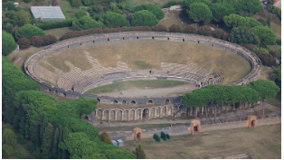

Leisure
Bradley attributes the seeming affinity towards leisure of the Pompeiians to the popularity of Epicureanism philosophy and the worship of Dionysus/Bacchus referring to them both as ‘prevalent in Campania’. Regardless of the influence these cultural identities had, the theatres and amphitheatre reveal that leisure activities had a significant role within Pompeiian society.
Pompeii featured two theatres, the large theatre and the Odeon as shown in sources 1 and 2 respectively.

The architecture of both theatres is categorized by two areas, the horseshoe-shaped cavea and the proscenium (stage). The cavea was used as a seating area for the audience, however it was stratified into three sections. Bradley states that the ‘section nearest the stage (ima cavea) was reserved for the authorities, and the highest section (summa cavea) appears to have been occupied by women.’ Bradley goes on to state that ‘Other members of the public were seated in the media cavea.’ This reflects the imposing social hierarchy of Roman times as inescapable, appearing even in leisure. From the seating arrangement we can also support judgments on the (perceived) importance of each class as women were given the worst seating, it can be interpreted that during Roman times they had little authority in society compared to the elite that were able to sit closest to the performance. The large theatre was also an example of Greek influence within the region, as Mau and Bradley state that the large theatre was built ‘as early as the second century B.C’, ‘when Greek influence in Campania was still strong’. According to Bradley the Odeon was ‘to be used for more serious performances’ while we can assume that the large theatre featured more light hearted entertainment.
The Pompeii amphitheatre, shown in source 3, is an imposing testament to the popularity of munera gladiatoria (gladiator games). The amphitheatres construction was funded by C. Quinctius Valgus and Marcus after their reelection as duoviri quinquennali (the magistrats of Pompeii), as revealed in source 4. This is reflective of both the vast wealth of the Pompeian elite and the role of government officials as financiers of public assets.
Source 3: Amphitheatre
Source 4: Inscription revealing builders of amphitheatre, taken from POMPEII ITS LIFE AND ART. C. Quinctius C. f. Valgus, M. Porcius M. f[ilius] duo vir[i] quinq[uennales] coloniai honoris caussa spectacula de sua peq[unia] fac[iunda] coer[arunt] et coloneis locum in perpetuom deder[unt].
Mau describes the amphitheatre as the ‘the oldest known to us from either literary or monumental sources’, revealing the amphitheatres significance as the first of its kind. Despite this, in comparison to lofty amphitheatres such as the Colosseum, Mau describes the amphitheatre as ‘indeed unpretentious’. While Bradley states the amphitheatre as ‘[able to hold] 20 000 people’, its absence of underground chambers point Mau to state that ‘exhibitions held here must also have been on a modest scale’. While its design may have been modest, the amphitheatre was a prime attraction in the city with the large seating capacity suggesting that people from Campina traveled to Pompeii to view munera gladiatoria. It should be noted that, like the theatres, seating was based on one's position in the social hierarchy, with women seated at the top of the amphitheatre (summa cavea), men in the middle (media cavea) while the elite sat in closest to the action (ima cavea). Although the seating of the elite was not completely unjustified as Bradley states that ‘a games sponsor, called editore munerum was expected to fully or partly finance the production’. This is evidenced by edicta munerum (inscriptions advertising the performance) found throughout Pompeii. Source 5 shows part of the epitaph of A. Clodius Flaccus.
Source 5: Part of the epitaph of A. Clodius Flaccus For the feast of Apollo, (A. Clodius Flaccus provided) a day of contests between thirty pairs of wrestlers and forty pairs of gladiators in the Amphitheatre. A hunt with wild boars and bears and bull fights.
Aside from providing us with information regarding the finance of these displays, the epitaph also illuminates the type of performance one could expect in the Pompeii amphitheatre.
While it is clear that munera gladiatoria was quite popular these displays did not always go quite to plan. One such occasion was a riot between the Pompeians and Nucerians. Mau describes the ordeal as ‘mutual bantering and recriminations, then resorted to stone-throwing, and finally engaged in a free fight with weapons’. The ordeal resulted with the Nucerians carrying the matter to Rome, lodging a complaint with Nero, the outcome of which saw ‘that the Pompeians should not be permitted to hold any gladiatorial exhibitions for the space of ten years’ according to Mau.